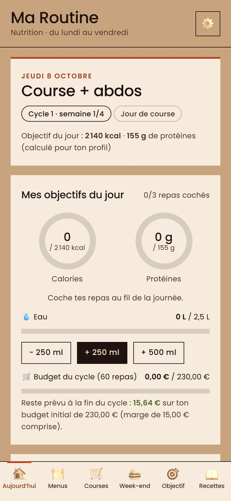
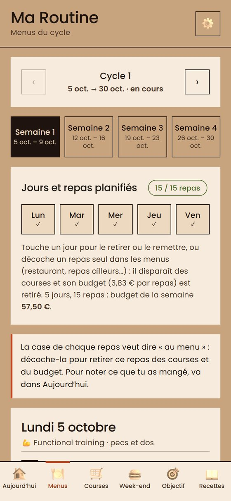
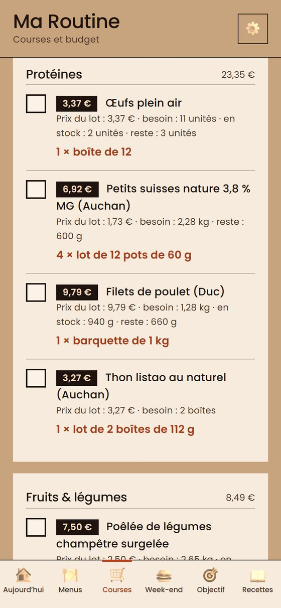
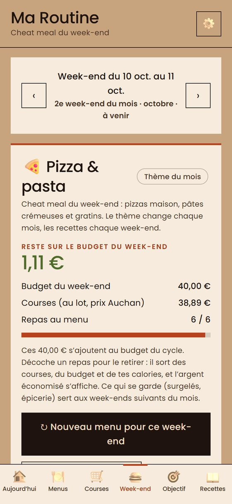
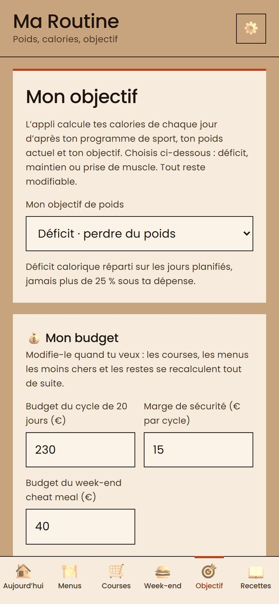

Calories sur mesure
Selon ton sexe, ton âge, ton poids, ton objectif (perdre, maintenir ou prendre du muscle) et tes séances de la semaine.
Dis-lui ton sport, ton poids et ton budget : elle te donne tes calories du jour, des menus du lundi au vendredi et la liste de courses avec les prix.
Sur ordinateur ? Scanne ce code avec ton téléphone.
Selon ton sexe, ton âge, ton poids, ton objectif (perdre, maintenir ou prendre du muscle) et tes séances de la semaine.
Des menus du lundi au vendredi, une liste de courses par semaine, avec le prix de chaque article et les restes déjà déduits.
Fixe un budget : si tu retires un repas ou un jour, la liste et ce qu’il te reste à dépenser se recalculent tout de suite.
Samedi et dimanche, des recettes gourmandes (burgers, pizzas, tex-mex…) avec leur budget, qui changent chaque mois et chaque week-end.
Course, musculation, marche, repos : choisis ce que tu fais chaque jour, les calories suivent.
Compare tes prix à ceux relevés dans les magasins proches et réajuste-les en un geste.





Une fois installée, elle s’ouvre en plein écran et fonctionne même sans réseau.
Oui : pas d’abonnement, pas de publicité, pas de compte à créer.
Tout reste dans ton téléphone (poids, profil, budget, repas). Rien n’est envoyé à un serveur. Si tu utilises « Prix près de moi », ta position arrondie à 1 km est envoyée à Open Prices pour trouver les relevés proches, et rien d’autre.
Ce sont des estimations indicatives calculées avec des formules courantes. Elles ne remplacent pas l’avis d’un médecin ou d’un diététicien. Ta courbe de poids sert à corriger le tir.
Des relevés de prix d’un drive Auchan en octobre 2026, modifiables par toi. Avec « Prix près de moi », l’appli propose aussi des prix relevés par la communauté Open Food Facts (Open Prices) autour de toi. Ce sont des indications : vérifie en magasin.
Aucun souci : choisis « Mon propre programme » et indique, pour chaque jour, repos, marche, course ou musculation.